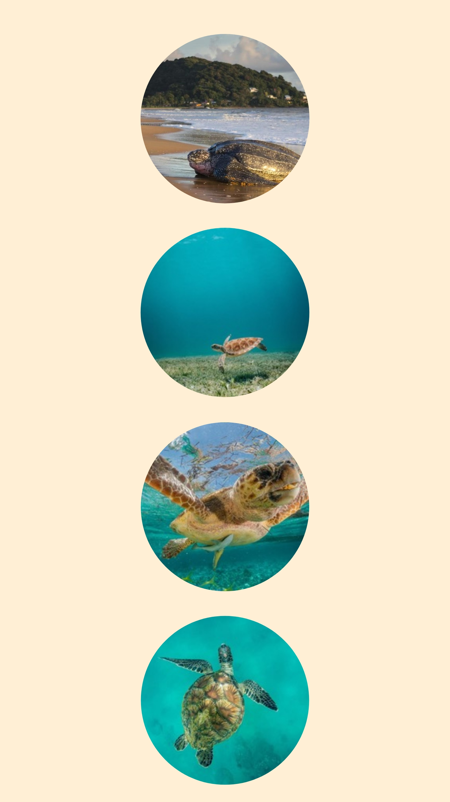

Les Tortues de mer , présentes depuis plus de 100 millions d'années, ont survécu à l'époque des dinosaures et aux nombreux changements climatiques de la Terre. Adaptées à la vie marine avec leur carapace hydrodynamique et leurs membres en forme de palettes, elles sont devenues d'excellentes nageuses. Aujourd'hui, sept espèces principales peuplent les océans, chacune avec ses propres caractéristiques. Malgré leur incroyable résilience, les tortues de mer sont désormais menacées par la pollution, la pêche illégale, la destruction de leurs habitats et le changement climatique. Des efforts de conservation mondiaux cherchent à protéger ces créatures essentielles pour l'équilibre des écosystèmes marins, afin de garantir leur survie pour les générations futures.

Jonathan est la plus vieille tortue au monde, ayant 191 ans actuellement.